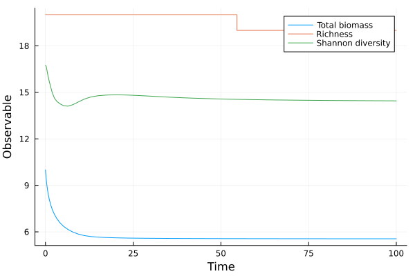

Analyse the Simulated Dynamics
Once the dynamics of the community have been simulated, we can analyse the results to better understand the behaviour of the community. To do so, we provide a few functions to compute various properties of the community dynamics.
Let's first simulate the dynamics of a species-rich community with the niche model:
using EcologicalNetworksDynamics, Plots
S = 20 # Number of species.
C = 0.1 # Connectance.
foodweb = Foodweb(:niche; S, C)
m = default_model(foodweb)
B0 = rand(S) # Vector of initial biomasses.
t = 100 # Simulation time.
sol = simulate(m, B0, t)retcode: Success
Interpolation: 3rd order Hermite
t: 28-element Vector{Float64}:
0.0
0.10274350623773106
0.3031940245113595
0.5525947071715004
0.8260299407759399
1.177052622071038
1.574481428029075
2.084990815141874
2.730569179197417
3.4820284802763752
⋮
20.547487721361485
23.891771892450155
27.84321770952753
37.7454791769637
43.05864453654294
58.352914946660505
69.94890933073623
92.23695027603142
100.0
u: 28-element Vector{Vector{Float64}}:
[0.7082297442636106, 0.6354440060690394, 0.6726552064616438, 0.6305931072152525, 0.6784278077183197, 0.7972768826869776, 0.9424973009100776, 0.1545375662893027, 0.22222819518234715, 0.15243081531863578, 0.2772960431864041, 0.0686417213175986, 0.23985820911579625, 0.821653405013601, 0.6446454718538993, 0.9743638197762838, 0.6941428161068445, 0.15026625078017541, 0.7227459169114818, 0.8042303373885884]
[0.7561283349565054, 0.6555481956915935, 0.7079891988018645, 0.6444072699005943, 0.6617952033449802, 0.7650654850105372, 0.8300785609272797, 0.15497832569569292, 0.22190607129668288, 0.16032184028342708, 0.27997110402337805, 0.07314129629057323, 0.25202220739281417, 0.803052500865776, 0.6625877727452696, 0.8888975946163077, 0.6637964877064324, 0.14559859197076772, 0.7389613097521359, 0.6636226207266142]
[0.8505427187305428, 0.6875707177104021, 0.7748058798113571, 0.6599458815462469, 0.6274879492169768, 0.7057071790217562, 0.6585384620037293, 0.15446266892736493, 0.22082270824487985, 0.1753859309905849, 0.28407155394313843, 0.08191632993268377, 0.27717829087710283, 0.7710417550960927, 0.6975911356910326, 0.7430678748073081, 0.5986733353724392, 0.1401996301720606, 0.7399467552896368, 0.45692863575927156]
[0.9640807514485396, 0.7141310608555916, 0.8536070256765625, 0.6624900663673013, 0.5838155050100512, 0.6409151379802583, 0.510256385334301, 0.15312113839130254, 0.21915900414883924, 0.19343874459368487, 0.288213965586928, 0.09225052920099289, 0.311401036030614, 0.7374790460241926, 0.7371263550069809, 0.5924151764913206, 0.5121181053405186, 0.13881757571125597, 0.686993423025107, 0.312249455956605]
[1.0730050099513404, 0.7277303830750114, 0.9335560116315482, 0.6513012901533556, 0.5378169761335474, 0.5826083765096891, 0.4011019372755955, 0.15250699314328886, 0.21755839960873413, 0.21245089428190628, 0.2929361845283956, 0.10180209325351976, 0.3528362071884621, 0.7063120385177605, 0.7685607240627907, 0.46174808920215327, 0.4198752508393215, 0.14266492319534127, 0.5929472066988504, 0.24031358486551463]
[1.1750309736272584, 0.7257885112020108, 1.0243598422660378, 0.6258524989780718, 0.485019872943435, 0.5255119683932002, 0.30915648093206943, 0.1539591336896554, 0.21635267536435654, 0.23600337771334756, 0.3005876983259738, 0.11003066085613128, 0.4112567090991642, 0.671360518087892, 0.781248738698288, 0.34285361563156724, 0.32012650847663493, 0.15438179889944514, 0.46832202544310475, 0.205572794319349]
[1.2379922954359857, 0.7052198802941908, 1.108813439219711, 0.5918970171214255, 0.43560916860124416, 0.48009837549157647, 0.24203489422825125, 0.1584104491346775, 0.21615806405961588, 0.2619251377645199, 0.3119106087174928, 0.11389159407311437, 0.48072207928566335, 0.6346907953818203, 0.7547281764838575, 0.26091047889129343, 0.24017534174172014, 0.17538277934915777, 0.35661971900123646, 0.19855185514720058]
[1.261933494560202, 0.6636080131559908, 1.1877081406339243, 0.5497508057609778, 0.3876087627064309, 0.44308827679410556, 0.1870441917437254, 0.16734021708966676, 0.21717453216774718, 0.29432482857363906, 0.32999079393623276, 0.11301579772676464, 0.56376750795285, 0.5892306436356551, 0.6767638974963837, 0.20528772798924377, 0.1784337189507215, 0.21227955486453756, 0.2661891465451819, 0.2115136183855471]
[1.245912537435735, 0.6043331245056004, 1.2452477019893093, 0.5058772954504357, 0.34700685016538607, 0.41824333620031834, 0.14417666989468272, 0.18183022082679598, 0.21959434349893078, 0.33338293172402833, 0.35625252672673063, 0.10731652390485961, 0.6388275336152615, 0.5372821978379553, 0.5597386708248094, 0.17333247916583594, 0.13909633821613152, 0.2709672765306245, 0.20850758627116317, 0.24425621222556748]
[1.2025382682744439, 0.540851439887964, 1.2690997259486594, 0.47008935724922235, 0.3198492027041735, 0.4069949550512463, 0.11389266889785347, 0.2007093083599818, 0.22306436746717193, 0.37442648142745805, 0.3876082141157166, 0.09868350302871808, 0.6747462339577932, 0.49141221445880295, 0.44407311505240915, 0.15915507300235668, 0.12170055715828969, 0.3475917856830075, 0.1825844065424438, 0.29043295673958697]
⋮
[0.9793690080999397, 0.3015383345799168, 1.1564585806219245, 0.432275219712415, 0.3565564556514272, 0.4564675278791513, 0.05976867745835943, 0.29859759606027014, 0.16954334732835066, 0.44984740454858696, 0.44984741605170236, 0.04270782792946582, 0.4330441475720876, 0.48181328724909217, 0.16920171470320852, 0.19163069255350043, 0.18610442814807657, 0.4244212599170523, 0.2820836940066618, 0.2667388175862168]
[0.979777329919181, 0.298608824548489, 1.152246945332138, 0.43019507874479584, 0.35780431690926073, 0.45751850588684123, 0.06065353343466037, 0.29860176865052523, 0.16678315433632937, 0.44996371827791426, 0.4499637267673029, 0.03951700400570991, 0.43445644093006597, 0.48224400135910184, 0.1675639792688918, 0.19227206099459598, 0.1861914018558002, 0.4237436042106381, 0.2825210431851029, 0.26565818664696966]
[0.9816485895829027, 0.2968407697895981, 1.1492538602283524, 0.4287282018906168, 0.3587204747142956, 0.4581872458747661, 0.06144817112748993, 0.2983447885461813, 0.16506070157651864, 0.449938963908403, 0.44993898222023526, 0.036362673110559816, 0.435571260011881, 0.48226468718163773, 0.1664054769742526, 0.192595967811248, 0.18626861836553676, 0.4233877450557681, 0.2828706746495451, 0.26520662009648927]
[0.9876665819561506, 0.2953512970504186, 1.145994695875443, 0.4271160647115434, 0.3596281892829466, 0.45876862592176376, 0.062417947509054654, 0.2978586858143802, 0.1634226080880761, 0.44995570836192034, 0.449955704628533, 0.03033504140153988, 0.4363722573745762, 0.4822867876103474, 0.1653139643200709, 0.19266444966562657, 0.18625046409999896, 0.42330556877612313, 0.28331016887884763, 0.2646519472366263]
[0.9906779243710783, 0.2952317010491994, 1.1454876056185095, 0.42688099957564196, 0.35974036825809397, 0.458822456751366, 0.06257470593356454, 0.2977534200623193, 0.1631958882995268, 0.4499746272003773, 0.449974627886571, 0.02786948009649314, 0.43632467688243337, 0.48233849086554675, 0.16520682143767776, 0.1925659775998352, 0.1862090099577722, 0.42340988025760956, 0.28334536672445737, 0.26459174393468965]
[0.9971979429279462, 0.2951316083689279, 1.1450475073112651, 0.4266848445145861, 0.35980700855683606, 0.4588635452220587, 0.06269390000549037, 0.2976748933776787, 0.16290640919049132, 0.44999483707478205, 0.4499948369539673, 0.022546640715765367, 0.4361167214062442, 0.4824568723018347, 0.16516344238539268, 0.1923435740330392, 0.18611962555328382, 0.42365158931975355, 0.2833623465220887, 0.2645676753099461]
[1.000589923191609, 0.2951073044282802, 1.1450019377704264, 0.42666664350753936, 0.35979781900449054, 0.45886896278190864, 0.06269769341631865, 0.2976759090330546, 0.16282166123832637, 0.4500006977930458, 0.4500006978168813, 0.019689512087339014, 0.4360082521271423, 0.4825047773285676, 0.1651886015380177, 0.19224396577336422, 0.18608027302170121, 0.42375937405363495, 0.2833521053115428, 0.26457761958527903]
[1.0050706947159849, 0.2950753740869434, 1.1449519526592575, 0.42664497566816467, 0.35979004309469065, 0.4588766210421243, 0.0627030545938404, 0.29767675390671855, 0.16272614737307434, 0.4500059343435229, 0.45000593434019937, 0.015807695256981853, 0.43587569635319606, 0.48256179213648315, 0.16521519252425565, 0.19213318355333428, 0.18603577841667998, 0.4238795380827293, 0.28334198828619794, 0.26458871017053776]
[1.0062076619673952, 0.2950689315574614, 1.1449415529452087, 0.4266403893066153, 0.35978851641618037, 0.4588781644642906, 0.06270422616565412, 0.29767686639883834, 0.1627065119710226, 0.45000705777015715, 0.45000705777082955, 0.01479401544525749, 0.4358477274639416, 0.48257315960255565, 0.16522063349749302, 0.19211064532148603, 0.1860266929985404, 0.4239037865306168, 0.2833398034143856, 0.26459096057271086]When running the dynamics of a rich initial pool of species, we generally observe the extinction of some species. You can access the number of surviving species at the end of the simulation with:
richness(sol[end]) # Number of surviving species at the end of the simulation.20You can also get the trajectory of the species richness through time with:
richness(sol) # Richness at each time step.28-element Vector{Int64}:
20
20
20
20
20
20
20
20
20
20
⋮
20
20
20
20
20
20
20
20
20Similarly, you can compute the persistence, that is the proportion of species that are present at each time step:
persistence(sol) # Equivalent to: richness(sol) ./ S28-element Vector{Float64}:
1.0
1.0
1.0
1.0
1.0
1.0
1.0
1.0
1.0
1.0
⋮
1.0
1.0
1.0
1.0
1.0
1.0
1.0
1.0
1.0Or the total biomass of the community:
total_biomass(sol)28-element Vector{Float64}:
10.99216462356588
10.729869971999227
10.305885393144607
9.90407948818095
9.569632574116126
9.242776402946992
8.965742149423756
8.70605367066953
8.48118235701016
8.3195038350073
⋮
7.588015437657407
7.5762846252643135
7.5690444727162784
7.5626267585639875
7.562175772762764
7.562325821051378
7.56263373080847
7.562967060604917
7.563034361580641Or the shannon diversity index:
shannon_diversity(sol)28-element Vector{Float64}:
17.00941872512967
17.197860160596846
17.339479677341135
17.26399853623316
17.039076109136833
16.675642227363106
16.30196175799898
15.983443023779548
15.801427241653164
15.773866262687918
⋮
16.08968168480315
16.073052453944417
16.05504063777443
16.014314732680795
15.995443748736667
15.952047217114487
15.927652163897363
15.893376230595287
15.884192706322866For example, you can plot how a few of these properties evolve through time:
time = sol.t
plot(
time,
total_biomass(sol);
xlabel = "Time",
ylabel = "Observable",
label = "Total biomass",
)
plot!(time, richness(sol); label = "Richness")
plot!(time, shannon_diversity(sol); label = "Shannon diversity")